Buddy
Helping students adjust to campus life
Google Design Internship Task
Prompt
" Your school wants to strengthen the community by encouraging experienced students to connect with new students and help them adjust to campus life. Design an experience that allows mentors and mentees to discover each other. Consider the
needs of both mentors and mentees, including how someone may become a mentor and how to connect mentors to mentees. "
Being in IIT Bombay with around 10,000 students does makes one feel overwhelmed. Especially, for the freshmen batch, it's very easy to feel lost. IIT Bombay attempts to solve this through Student Mentorship Program (SMP). Being a mentor myself, I got excited to take on this particular prompt and design a solution for it.
Planning the task
Because of the 7 day time constraint, I decided to choose Google Venture's Design Sprint Framework, with 1 phase per day and the last day for presentation.
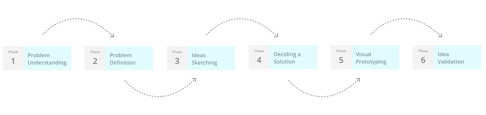
Design sprint framework
Phase 1 : Problem Understanding
Reframing
To better understand the problem statement, I tried to break it down into its core aims. This helped me to stay focus and avoid tempting distractions through the process.
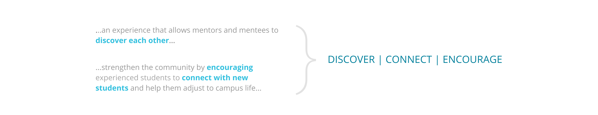
Core aims of the solution
Discover : How do we make mentors and mentees discover each other in a meaningful way ?
Connect : How do we connect them in the way thats valuable and less intrusive ?
Encourage : How do we encourage the mentorship to sustain and help the mentees during freshmen year ?
Bias handling
Before I began, I wanted to make sure I don’t represent my personal biases. I noted down the possible reasons I might be biased during the design process.
Possible reasons for bias -
I don’t speak Hindi - conversational language in Mumbai
I am used to the hostel experience for over 5 years
I had 10+ friends already studying in the campus
I was pro-active about club activities
I became a student mentor
My mentees were from my own department
My department functions quite differently from the others in the campus
Research guidelines
To make sure that my assumptions and biases dont affect my research, I created a framework that would help me understand the things involved from scratch, to ensure that no detail is overlooked during primary and secondary
reserach.
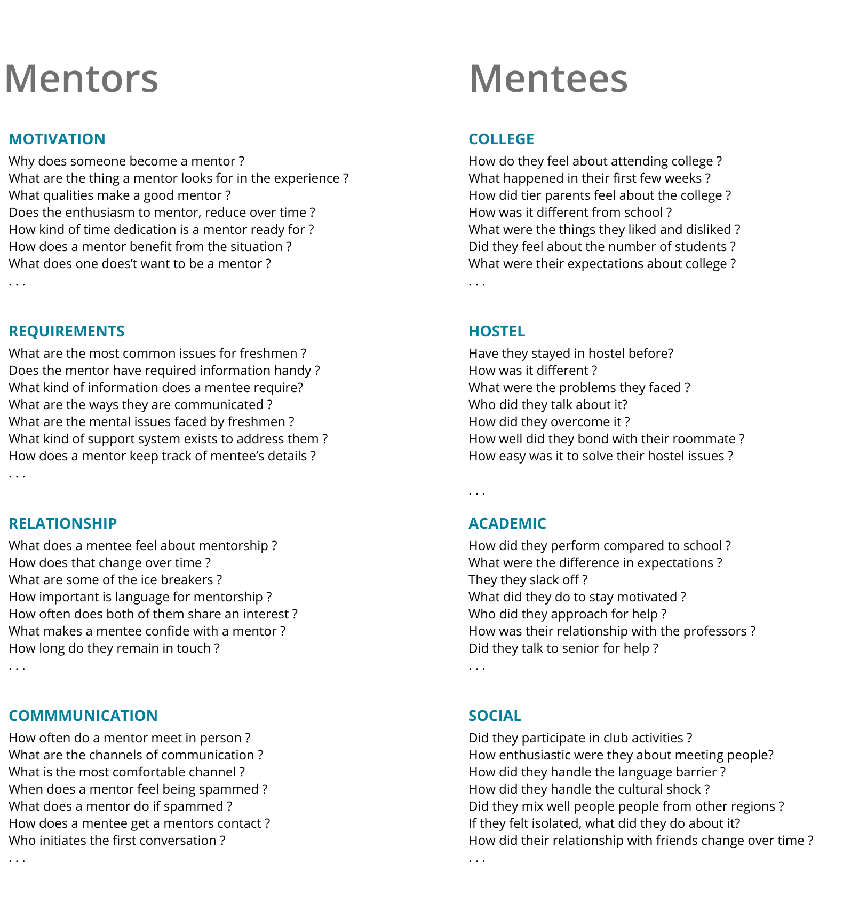
Research question (non-exhaustive list)
Understanding existing systems
To begin with, I wanted to understand the current system we have at IIT Bombay. The Student Mentor Program (SMP) has been setup for over several years and offers mentorship to the freshmen. Being a mentor myself, I knew the
details, strengths and weaknesses of the system. However, I talked to some of my seniors and my heads to understand the system better.
The current system has two wings - Institute Student Mentorship Program (ISMP): for campus life and Department Academic Mentorship Program (DAMP): for academics. DAMP is for sophomores and seniors where as ISMP is for
freshmen.

Student Mentor Program's structure
A lot of resources needed by freshmen are put up online by various bodies, but in an inconsistent and haphazard way. This is due to the lack of coordination between the involved bodies. This results in a pretty messy online
information system, that's both cluttered and hard to find.
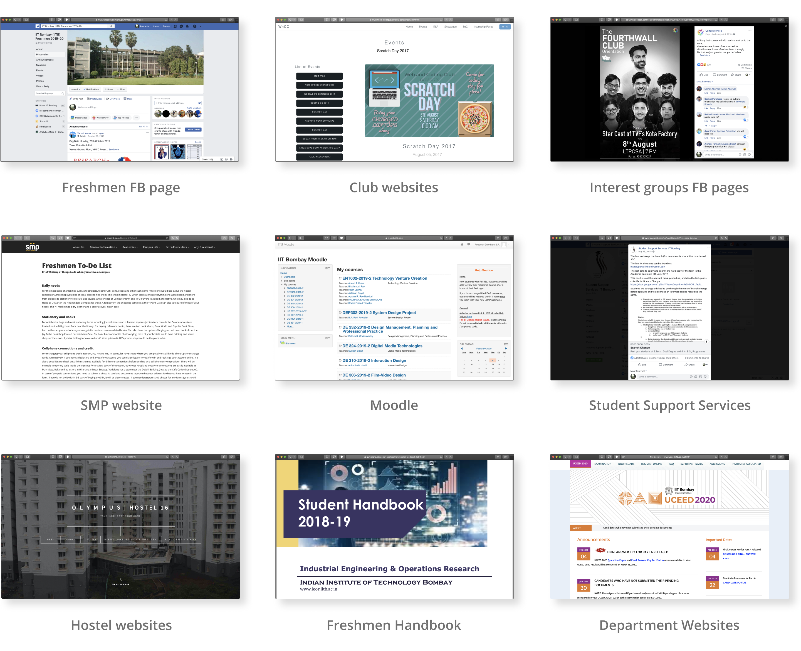
Various online portals available for freshmen
Based on the talks and interviews I had with other mentors and coordinators, I was able to identify the problems and bottlenecks in the current system, which I have discussed in the later sections.
User Interviews
To understand the user needs and frustrations, I had to perform Contextual Interviews. Since the freshmen has already been in the campus for a semester, it's not possible to interview
them in the contextual setting. There are some of the efforts I made to make it as contextual yet casual and un-intrusive as possible.
Attending mentor-mentee meeting of other mentors
Attending the DAMP Coordinator’s meeting
Taking my mentee group for a pizza treat
One-on-one discussions with my mentees
Casual chat at the end of a club meet
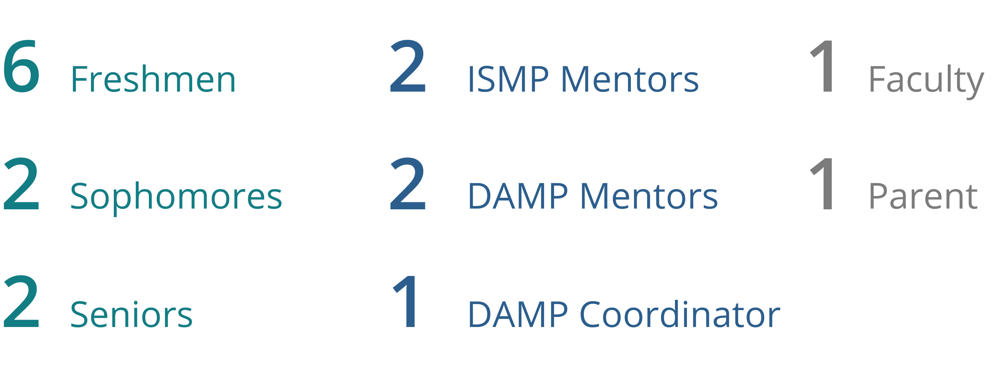
Demographic of the Interviews
Altogether I was able to pack 17 interviews, some elaborate some short. The interview notes were put in a Google sheet, which were later used to derive pain points, user problems and insights.
Phase 2 : Problem Definition
Journey Mapping
Based on the insights I derived from the interviews, I created a journey map for both mentors and mentees. I was able to condense all the points and categorise them into pain points, insights and problem statements. It was
later helpful in deciding on the features and define the scope of the solution.
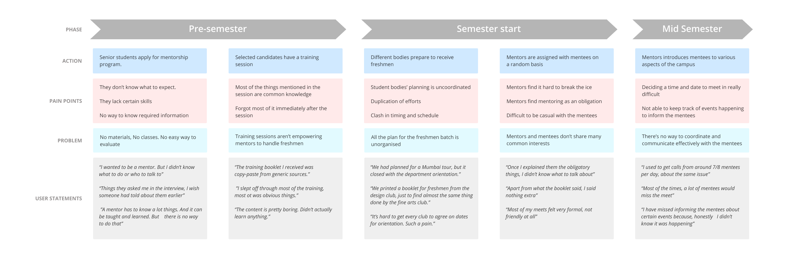
Journey map of a mentor
Actionable Insights
From the journey map, I extracted the core insights, which would guide through deciding the details of the solution. These actionable insights served as a framework to design the solution, hence keeping things concise.
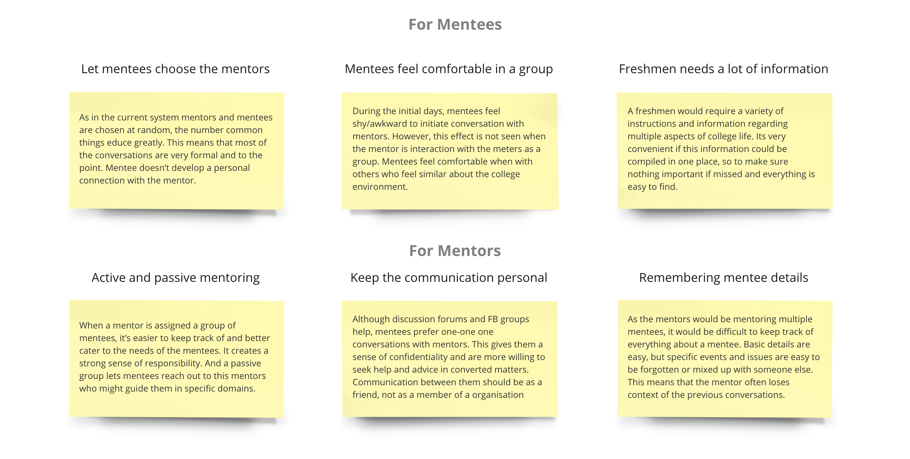
User Personas
I created multiple user personas, based on the interviews. Going through the personas, helped me to identity the Primary Persona, to gear the product around and negative personas to stay away from filling the app with
features.
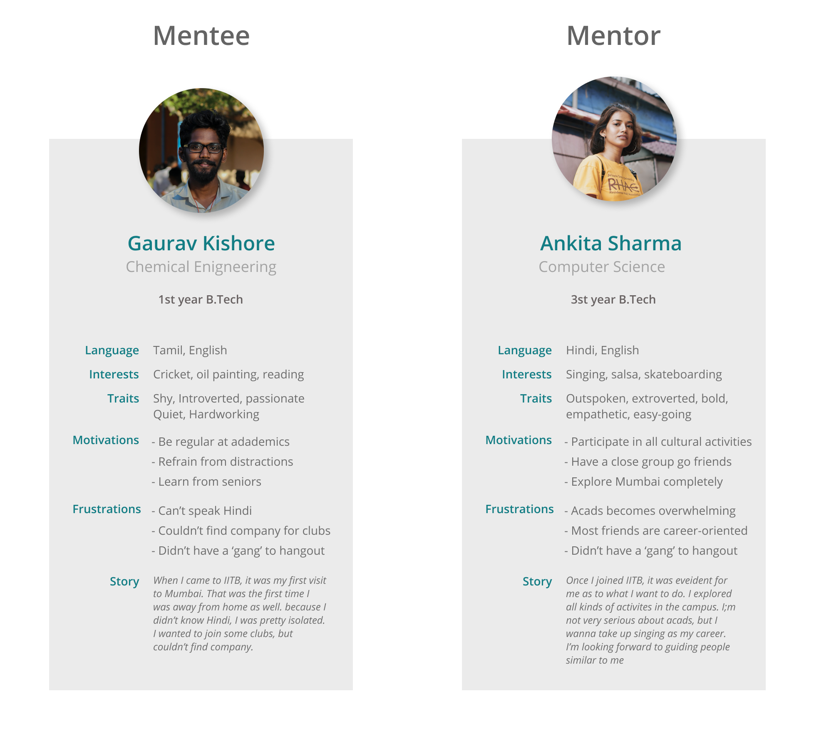
Primary Personas
Refined Problem Statement
Now after the interviews, joinery mapping and creating the personas, I had a good understand of the user needs. This means, I was able to frame the problem statement better and define the scope of the product.
Create a solution to help mentees discover mentors and an easy and effective way to ease the communication between them.
Phase 3 : Ideas Sketching
It was then time to start sketching. I started with a very loosely defined style and let it develop over multiple iterations. First, I sketched out the user flows, then moved to creating individual screens.
Information Architecture
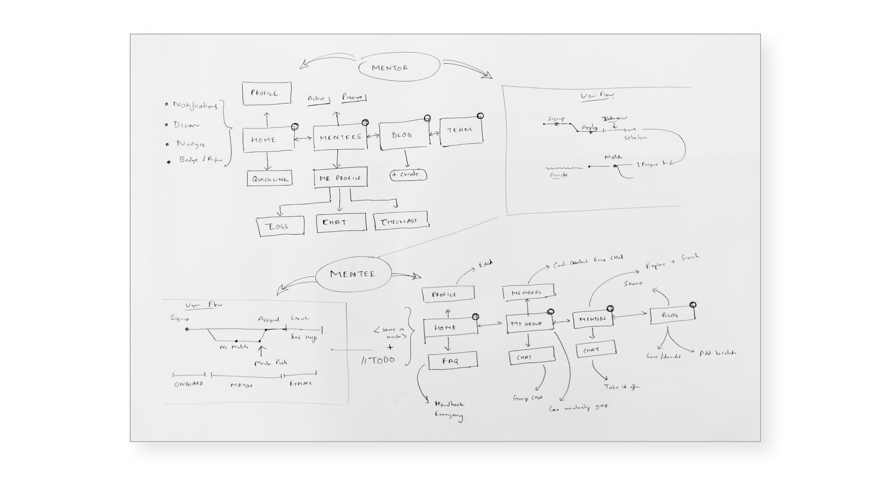
Information architecture
Wireframes
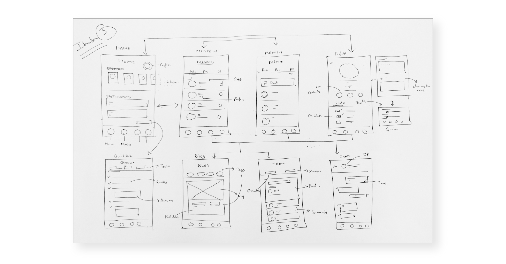
Wireframes
Phase 4 : Deciding a solution
Flow Model
With the sketches ready, before I start to prototype, I wanted to create a simplified user flow and define the features and scope of the functionality. This flow structure helped me feel the various interaction between mentor
and mentee in mind while prototyping.
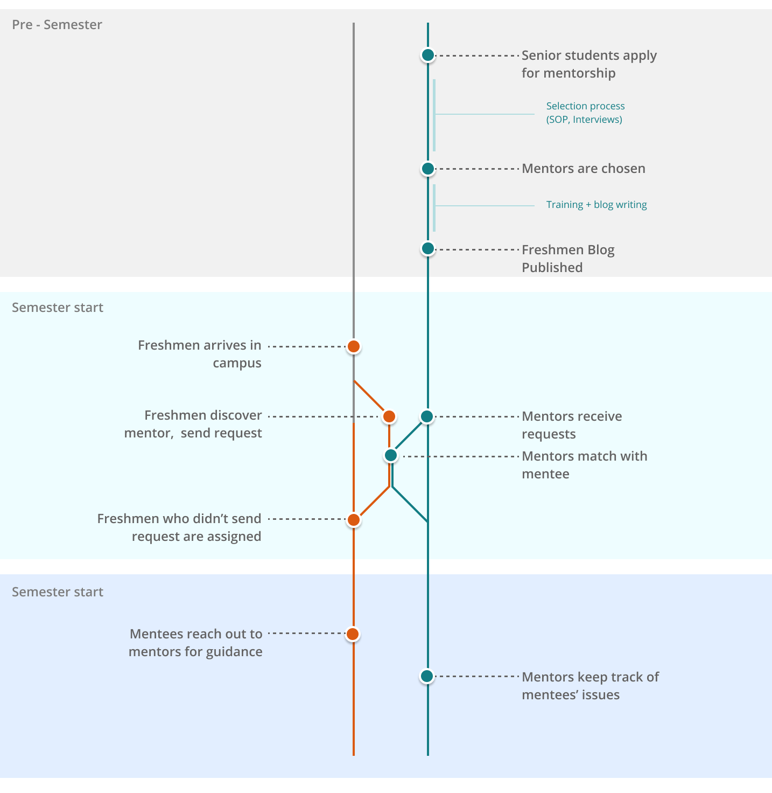
Simplified Flow Model
Features
Active mentoring consists of a group of 8-12 mentees, for whom the mentor will be directly responsible and have frequent meetups and events.
Passive mentoring is interest based mentoring to reach out to mentors with specific interests like sports, cultural activities, for guidance in campus life
Features for Mentees
Create a profile with interests and language spoken
Suggest mentors based on interests and flairs
Be a part of the mentee group, with a group chat
Chat with other mentors in their preferred communication channel
Have a freshmen TODO list
Have quick access to FAQ
Have a freshmen blog with updates on events, announcements and more
Add events to the calendar
Features for Mentors
Create a profile with interests and language spoken
Suggest mentees based on interests and language
Search for mentees who aren’t assigned mentors
Create a group with active mentees
Have quick access to various supporting resources
Have a checklist for each mentee
Have a mentee log to keep track of mentee issues
Create posts in Freshmen blog
Have a mentor discussion page to inform and reach out to other mentors
Chat with other mentors
Information Architecture
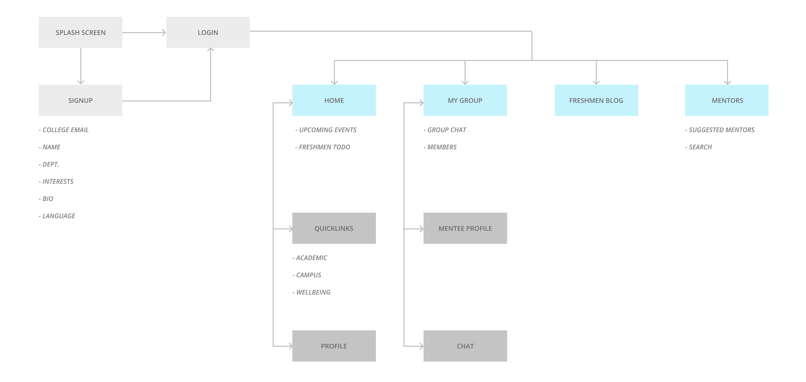
Information architecture of Mentee App
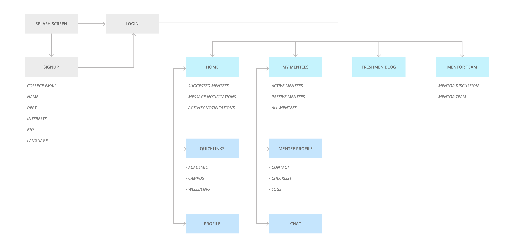
Information architecture of Mentor App
Phase 5 : Visual Prototyping
Low Fidelity Prototype
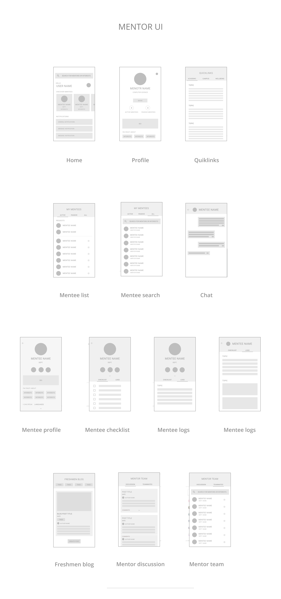
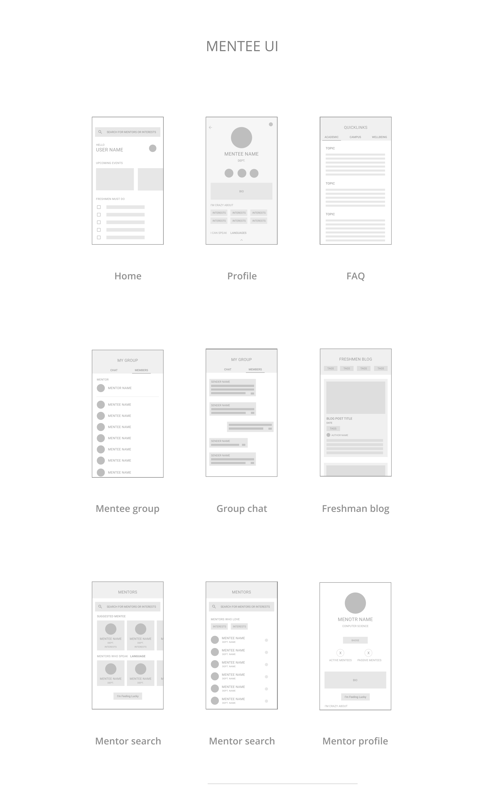
High Fidelity Prototype
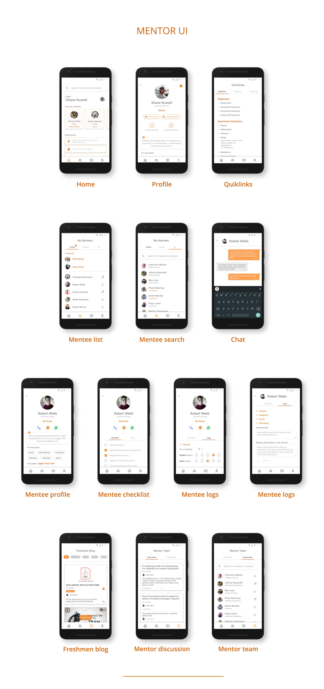
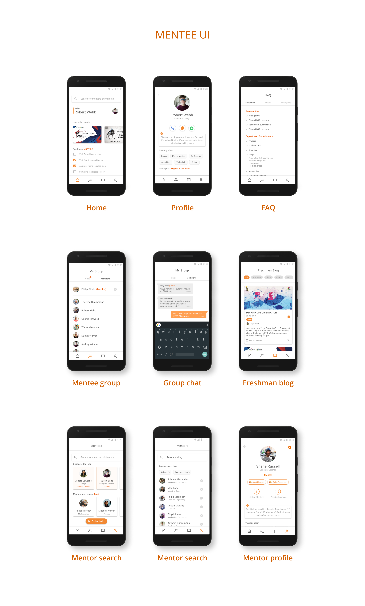
Phase 6 : Idea Validation
Due to time constraints, I wasn’t able to perform a comprehensive evaluation of the prototypes. However, in a very informal way, I had freshmen and mentors to navigate the app using an interactive prototype. I let them play around
with the prototype and then asked them to perform a specific action. 6/7 times, they were able to be successful in doing soon their first attempt and 7/7 times they were able to perform within 3 attempts. This was a very crude way of testing,
but this was the only possible course of action I was able to take due to time limitation.
Final Thoughts
I was able to complete most of the process with decent quality. However, I had to skip a lot of details in the documentation process due to the time limitation. If I had time, there are the things I would have liked to work
on.
Perform a good validation process
Integrate the mentor selection process within the app
Design the onboarding screen
Have better iconography
Have comprehensive nudges to guide user actions
Create an admin portal to keep track of mentor/mentee performances
Have the documentation more detailed and comprehensive
Conclusion
To conclude, I had a lot of fun working on this task. The topic especially was very relatable, that made the talk more enjoyable. It was a good excise for me to go through the whole process and the time constraint meant, I couldn’t afford distractions and had to stick with the plan throughout. Although I couldn’t ensure that each process was as in depth as I wanted it to be, I was able to create a good enough solution in a week.
During the process, some of the mentors heard about the idea and the cabinet is now discussing to have such a system actually built for IITB. That would be cherry on the top!
Thank you for the opportunity and going through my project. I look forward for any kind of reviews and feedbacks is possible. Now its time to wait for the results :)